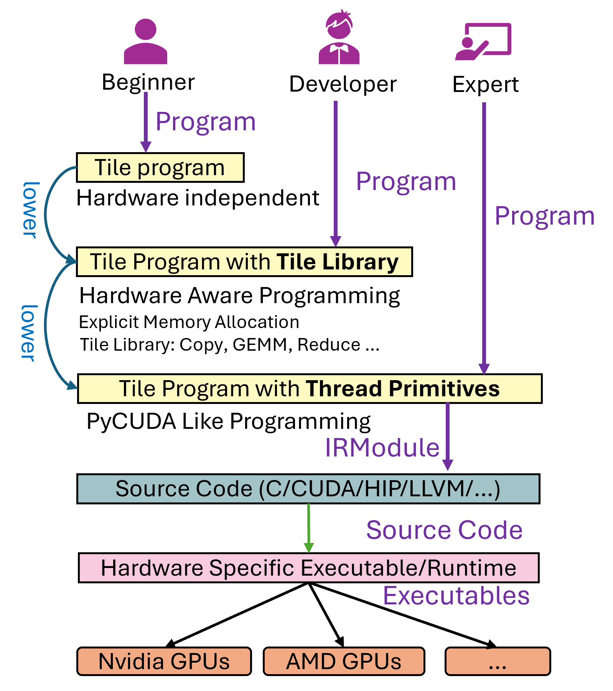

4090 的cuda特性¶
基本api¶
内存管理¶
cudaMalloc：在设备（GPU）上分配内存。 cudaFree：释放设备上的内存。 cudaMemcpy：在主机（CPU）和设备之间复制内存。
同步¶
cudaDeviceSynchronize：等待设备上的所有先前发布的任务完成。 __syncthreads()：在一个线程块内同步所有线程。
设备管理¶
cudaSetDevice：设置当前使用的GPU设备。 cudaGetDeviceProperties：获取设备的属性。
错误处理¶
cudaGetLastError：返回上一个CUDA调用的错误状态。 cudaGetErrorString：返回错误代码对应的字符串描述。
流（Stream）管理¶
cudaStreamCreate：创建一个新的流。 cudaStreamDestroy：销毁一个流。 cudaStreamSynchronize：等待一个流中的所有操作完成。
事件（Event）管理¶
cudaEventCreate：创建一个新的事件。 cudaEventRecord：在一个流中记录一个事件。 cudaEventSynchronize：等待一个事件完成。
原子操作¶
atomicAdd：原子地增加一个值。 atomicCAS：原子地比较并交换一个值。
从指令角度理解¶
ptx 独立于特定gpu架构
- nvcc 编译 .cu 文件 ===> .ptx 代码
- .ptx -> gpu架构的二进制代码 驱动程序在运行时完成，或者编译时通过指定目标架构
-arch=sm_75完成
ptx指令¶
PTX指令集包括算术指令、内存访问指令、控制流指令等。例如： add.f32：浮点数加法。 ld.global：从全局内存加载数据。 st.shared：存储数据到共享内存。 bar.sync：线程块内的同步屏障。
优化和调度：
在PTX到二进制代码的转换过程中，编译器会进行各种优化，如指令调度、寄存器分配等，以提高代码的执行效率。 这些优化旨在最大化GPU的并行计算能力，减少内存访问延迟和线程等待时间。
运行时加载：
在程序运行时，CUDA驱动程序会加载二进制代码到GPU，并管理线程的调度和执行。 PTX代码也可以在运行时由驱动程序进行即时编译（JIT），以适应不同的GPU架构。
具体指令： 算术指令：
add：整数加法。 sub：整数减法。 mul：整数乘法。 mad：乘加（multiply-add）。 fadd：浮点数加法。 fmul：浮点数乘法。 内存访问指令：
ld：从内存加载数据。 st：将数据存储到内存。 ld.global：从全局内存加载数据。 st.shared：将数据存储到共享内存。 控制流指令：
bra：无条件跳转。 setp：设置谓词寄存器。 @p：基于谓词的条件执行。 同步指令：
bar.sync：线程块内的同步屏障。 membar：内存屏障，确保内存操作的顺序。 原子操作指令：
atom.add：原子加法。 atom.cas：原子比较并交换。 转换指令：
cvt：类型转换（如整数到浮点数）。 float2int：浮点数到整数的转换。 特殊指令：
tex：纹理内存访问。 s2r：特殊寄存器访问。 逻辑指令：
and：按位与。 or：按位或。 not：按位非。
继续学习¶
一些函数
#include <ATen/Tensor.h>
#include <ATen/Functions.h>
#include <torch/csrc/utils/pybind.h>
void square_cuda_forward(void* input, void* output, int size);
at::Tensor square_forward(const at::Tensor& input) {
auto output = at::zeros_like(input);
square_cuda_forward(input.data_ptr(), output.data_ptr(), input.numel());
return output;
}
PYBIND11_MODULE(TORCH_EXTENSION_NAME, m) {
m.def("square_forward", &square_forward, "Square forward (CUDA)");
}
os.environ["TORCH_CUDA_ARCH_LIST"] = "8.9"
start = time.time()
square_cuda = load(
name="square_cuda",
sources=[f"{dir_path}/square_kernel.cu"],
verbose=True,
build_directory=build_dir
)
end = time.time()
print(f"Time taken: {end - start} seconds")
tilelang 学习¶
from : https://leiblog.wang/Debug-Tools-for-TileLang/
- ctypes 调用的理论开销应该在 500ns ~ 5µs 之间，基本可忽略。

best practice¶
https://docs.nvidia.com/cuda/cuda-c-best-practices-guide/